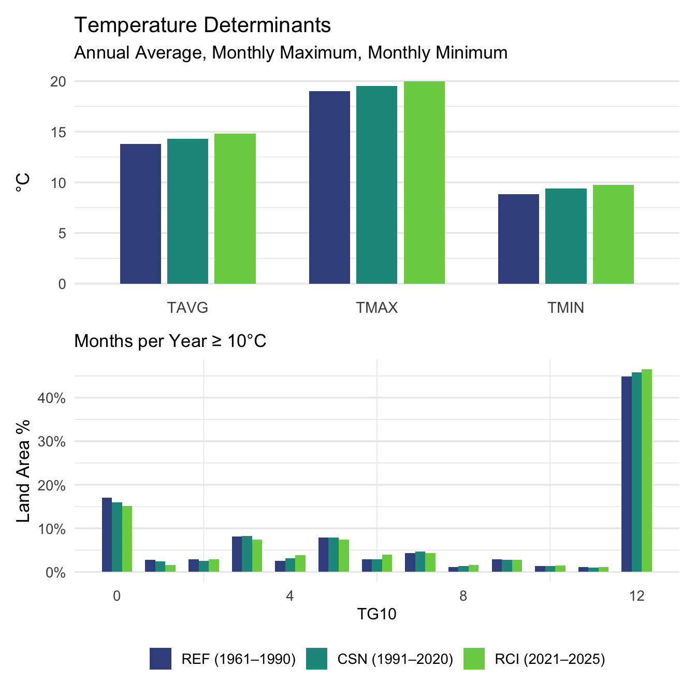
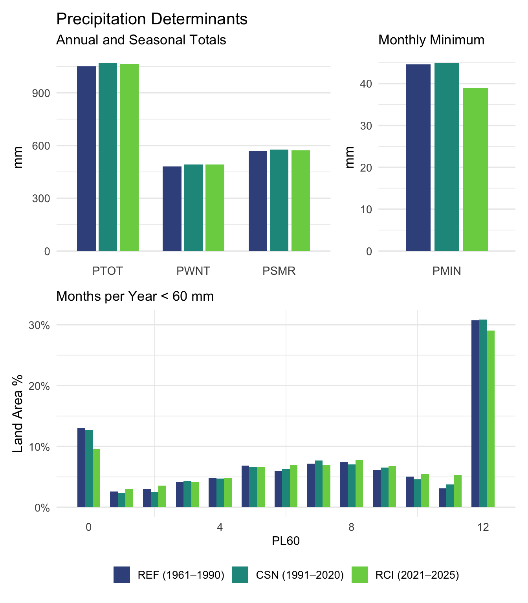
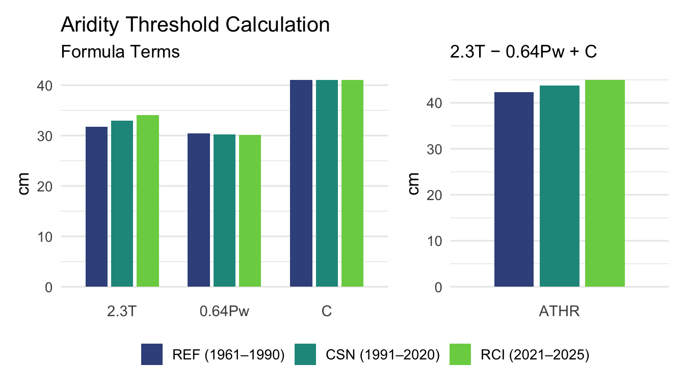

Show code
suppressPackageStartupMessages({
library(tidyverse)
library(gt)
library(arrow)
library(fs)
library(patchwork)
})Objective: Calculate the temperature, precipitation, and aridity determinants used by the Köppen–Trewartha climate-classification analysis for the REF, CSN, and RCI climate intervals. This notebook combines the transformed ERA5 climatologies, derives the classification determinants for each grid cell and interval, saves a unified determinant dataset for subsequent climate classification, and summarizes the area-weighted results.
suppressPackageStartupMessages({
library(tidyverse)
library(gt)
library(arrow)
library(fs)
library(patchwork)
})dir_transformed <- path("data", "transformed")
dir_derived <- path("data", "derived")
determinants_path <- path(
dir_derived,
"climate_determinants.parquet"
)# Recalculate the determinant dataset from the transformed ERA5 climatologies.
#
# Set to TRUE after the transformed climate data have changed or when the
# determinant dataset needs to be rebuilt. After a successful calculation,
# FALSE can be used for fast previewing and rendering.
run_determinant_calculation <- FALSEThe analysis uses three non-overlapping climate intervals to provide a consistent framework for comparing long-term and recent climate conditions and their resulting classifications.
source("R/climate-periods.R")
climate_periods |>
transmute(
`Period` = period_name,
`Short Label` = period_label,
`Abbreviation` = period_abbr,
`Years` = sprintf("%d–%d", start_year, end_year)
) |>
gt()| Period | Short Label | Abbreviation | Years |
|---|---|---|---|
| WMO Climatological Reference Period | Reference Period | REF | 1961–1990 |
| WMO Climatological Standard Normals | Standard Normal | CSN | 1991–2020 |
| Recent Climate Interval | Recent Interval | RCI | 2021–2025 |
period_labels <- setNames(
paste0(
climate_periods$period_label,
" (",
climate_periods$start_year,
"–",
climate_periods$end_year,
")"
),
climate_periods$period_abbr
)
period_palette <- setNames(
viridisLite::viridis(
nrow(climate_periods),
option = "D",
begin = 0.25,
end = 0.80
),
climate_periods$period_abbr
)The determinant calculations are applied independently to each climate interval.
The aridity threshold is calculated as:
R = 2.3T − 0.64Pw + 41
where R is the aridity threshold in centimetres, T is average annual air temperature in °C, and Pw is the percentage of annual precipitation occurring in winter.
Reference: https://www.int-res.com/articles/cr_oa/c059p001.pdf
t_determinants <- c(
"TAVG",
"TMAX",
"TMIN",
"TG10"
)
p_determinants <- c(
"PTOT",
"PWNT",
"PSMR",
"PMIN",
"PL60"
)
a_determinants <- "ATHR"
aridity_variables <- c(
"wpct",
"trm1",
"trm2",
"trm3"
)
determinants <- c(
t_determinants,
p_determinants,
aridity_variables,
a_determinants
)
determinant_metadata <- tribble(
~Determinant, ~Description, ~Role, ~Group,
"TAVG", "Average Annual Temperature (°C)", "Primary Determinant", "Temperature",
"TMAX", "Monthly Maximum Temperature (°C)", "Primary Determinant", "Temperature",
"TMIN", "Monthly Minimum Temperature (°C)", "Primary Determinant", "Temperature",
"TG10", "Months with Average Temperature ≥ 10°C", "Derived Determinant", "Temperature",
"PTOT", "Annual Total Precipitation (mm)", "Primary Determinant", "Precipitation",
"PWNT", "Winter Total Precipitation (mm)", "Primary Determinant", "Precipitation",
"PSMR", "Summer Total Precipitation (mm)", "Primary Determinant", "Precipitation",
"PMIN", "Monthly Minimum Precipitation (mm)", "Primary Determinant", "Precipitation",
"PL60", "Months with Total Precipitation < 60 mm", "Derived Determinant", "Precipitation",
"wpct", "Winter % of Total Precipitation (%)", "Intermediate Metric", "Aridity",
"trm1", "Term 1: TAVG × 2.3", "Formula Term", "Aridity",
"trm2", "Term 2: Winter Precipitation % × 0.64", "Formula Term", "Aridity",
"trm3", "Term 3: Constant 41", "Formula Term", "Aridity",
"ATHR", "Aridity Threshold (cm): Term 1 − Term 2 + Term 3","Derived Determinant", "Aridity"
)fn_t_determinants <- function(df) {
month_cols <- paste0("m", 1:12)
df |>
mutate(
TAVG = rowMeans(
across(all_of(month_cols)),
na.rm = TRUE
),
TMAX = do.call(
pmax,
c(
across(all_of(month_cols)),
na.rm = TRUE
)
),
TMIN = do.call(
pmin,
c(
across(all_of(month_cols)),
na.rm = TRUE
)
),
TG10 = rowSums(
across(
all_of(month_cols),
~ .x >= 10
),
na.rm = TRUE
),
TG10 = as.integer(TG10)
) |>
select(-all_of(month_cols))
}
fn_p_determinants <- function(df) {
month_cols <- paste0("m", 1:12)
df |>
mutate(
PTOT = rowSums(
across(all_of(month_cols)),
na.rm = TRUE
),
# Winter: October–March in the Northern Hemisphere and
# April–September in the Southern Hemisphere.
PWNT = case_when(
lat >= 0 ~ m1 + m2 + m3 + m10 + m11 + m12,
lat < 0 ~ m4 + m5 + m6 + m7 + m8 + m9
),
PSMR = case_when(
lat >= 0 ~ m4 + m5 + m6 + m7 + m8 + m9,
lat < 0 ~ m1 + m2 + m3 + m10 + m11 + m12
),
PMIN = do.call(
pmin,
c(
across(all_of(month_cols)),
na.rm = TRUE
)
),
PL60 = rowSums(
across(
all_of(month_cols),
~ .x < 60
),
na.rm = TRUE
),
PL60 = as.integer(PL60)
) |>
select(-all_of(month_cols))
}
fn_aridity_threshold <- function(df) {
df |>
mutate(
trm1 = 2.3 * TAVG,
wpct = if_else(
PTOT != 0,
(PWNT / PTOT) * 100,
0
),
trm2 = 0.64 * wpct,
trm3 = 41,
ATHR = trm1 - trm2 + trm3
)
}
fn_process_period <- function(period_row) {
start_year <- period_row$start_year[[1]]
end_year <- period_row$end_year[[1]]
temperature_path <- path(
dir_transformed,
sprintf(
"t_agg_%d-%d.parquet",
start_year,
end_year
)
)
precipitation_path <- path(
dir_transformed,
sprintf(
"p_agg_%d-%d.parquet",
start_year,
end_year
)
)
required_files <- c(
temperature_path,
precipitation_path
)
if (!all(file_exists(required_files))) {
stop(
"Missing transformed climate data for ",
period_row$period_abbr[[1]],
". Run 02-data-transformation.qmd first."
)
}
df_t_det <- read_parquet(
temperature_path
) |>
fn_t_determinants()
df_p_det <- read_parquet(
precipitation_path
) |>
fn_p_determinants()
df_t_det |>
left_join(
df_p_det,
by = c(
"lon",
"lat",
"area",
"lsm"
)
) |>
fn_aridity_threshold() |>
mutate(
period_id = period_row$period_id[[1]],
period_name = period_row$period_name[[1]],
period_label = period_row$period_label[[1]],
period_abbr = period_row$period_abbr[[1]],
start_year = start_year,
end_year = end_year,
.before = 1
)
}
fn_weighted_average <- function(df, determinant_names) {
df |>
pivot_longer(
cols = all_of(determinant_names),
names_to = "Determinant",
values_to = "value"
) |>
filter(
is.finite(value),
is.finite(area),
area > 0
) |>
group_by(
period_id,
period_name,
period_label,
period_abbr,
Determinant
) |>
summarise(
wgtavg = weighted.mean(
value,
w = area
),
.groups = "drop"
) |>
mutate(
Determinant = factor(
Determinant,
levels = determinant_names
)
) |>
arrange(
Determinant,
factor(
period_abbr,
levels = climate_periods$period_abbr
)
)
}
fn_summary_table <- function(
weighted_summary,
determinant_names,
title,
include_determinant = TRUE
) {
table_data <- weighted_summary |>
filter(
Determinant %in% determinant_names
) |>
mutate(
Determinant = as.character(Determinant)
) |>
left_join(
determinant_metadata,
by = "Determinant"
) |>
select(
Determinant,
Description,
Role,
period_abbr,
wgtavg
) |>
pivot_wider(
names_from = period_abbr,
values_from = wgtavg
) |>
select(
Description,
all_of(climate_periods$period_abbr),
Role,
Determinant
)
if (!include_determinant) {
table_data <- table_data |>
select(-Determinant)
}
table_data |>
gt() |>
tab_header(
title = title,
subtitle = "Area-Weighted Averages"
) |>
fmt_number(
columns = all_of(climate_periods$period_abbr),
decimals = 2
)
}
fn_build_determinants_plot <- function(df, type) {
if (type == "t") {
determinant_names <- c(
"TAVG",
"TMAX",
"TMIN"
)
plot_title <- "Temperature Determinants"
plot_subtitle <- "Annual Average, Monthly Maximum, Monthly Minimum"
units <- "°C"
} else if (type == "p") {
determinant_names <- c(
"PTOT",
"PWNT",
"PSMR"
)
plot_title <- "Precipitation Determinants"
plot_subtitle <- "Annual and Seasonal Totals"
units <- "mm"
} else if (type == "a") {
determinant_names <- c(
"trm1",
"trm2",
"trm3"
)
plot_title <- "Aridity Threshold Calculation"
plot_subtitle <- "Formula Terms"
units <- "cm"
} else {
stop("Unknown determinant plot type: ", type)
}
plot_data <- df |>
filter(
Determinant %in% determinant_names
) |>
mutate(
Determinant = factor(
as.character(Determinant),
levels = determinant_names
),
period_abbr = factor(
period_abbr,
levels = climate_periods$period_abbr
)
)
p <- ggplot(
plot_data,
aes(
x = Determinant,
y = wgtavg,
fill = period_abbr
)
) +
geom_col(
position = position_dodge(width = 0.75),
width = 0.65
) +
scale_fill_manual(
values = period_palette,
breaks = climate_periods$period_abbr,
labels = period_plot_labels,
guide = guide_legend(
nrow = 1,
byrow = TRUE
)
) +
labs(
title = plot_title,
subtitle = plot_subtitle,
x = NULL,
y = units,
fill = NULL
) +
theme_minimal(base_size = 13) +
theme(
legend.position = "bottom",
panel.grid.major.x = element_blank(),
axis.text.x = element_text(size = 11)
)
if (type == "a") {
p <- p +
scale_x_discrete(
labels = c(
trm1 = "2.3T",
trm2 = "0.64Pw",
trm3 = "C"
)
)
}
p
}
fn_build_single_plot <- function(df, determinant_name) {
if (determinant_name == "PMIN") {
plot_subtitle <- "Monthly Minimum"
units <- "mm"
} else if (determinant_name == "ATHR") {
plot_subtitle <- "2.3T − 0.64Pw + C"
units <- "cm"
} else {
stop("Unknown single determinant: ", determinant_name)
}
plot_data <- df |>
filter(
Determinant == determinant_name
) |>
mutate(
period_abbr = factor(
period_abbr,
levels = climate_periods$period_abbr
)
)
ggplot(
plot_data,
aes(
x = Determinant,
y = wgtavg,
fill = period_abbr
)
) +
geom_col(
position = position_dodge(width = 0.75),
width = 0.65
) +
scale_fill_manual(
values = period_palette,
breaks = climate_periods$period_abbr,
labels = period_plot_labels,
guide = guide_legend(
nrow = 1,
byrow = TRUE
)
) +
labs(
subtitle = plot_subtitle,
x = NULL,
y = units,
fill = NULL
) +
theme_minimal(base_size = 13) +
theme(
legend.position = "bottom",
panel.grid.major.x = element_blank(),
axis.text.x = element_text(size = 11)
)
}
fn_build_counts_plot <- function(
df,
determinant_name,
plot_subtitle
) {
plot_data <- df |>
filter(
lsm > 0
) |>
transmute(
period_abbr,
area,
value = .data[[determinant_name]]
) |>
group_by(
period_abbr,
value
) |>
summarise(
total_area = sum(
area,
na.rm = TRUE
),
.groups = "drop"
) |>
group_by(
period_abbr
) |>
mutate(
prop_area = total_area /
sum(total_area)
) |>
ungroup() |>
mutate(
period_abbr = factor(
period_abbr,
levels = climate_periods$period_abbr
)
)
ggplot(
plot_data,
aes(
x = value,
y = prop_area,
fill = period_abbr
)
) +
geom_col(
position = "dodge",
width = 0.7
) +
scale_y_continuous(
labels = scales::percent_format(
accuracy = 1
)
) +
scale_fill_manual(
values = period_palette,
breaks = climate_periods$period_abbr,
labels = period_plot_labels,
guide = guide_legend(
nrow = 1,
byrow = TRUE
)
) +
labs(
subtitle = plot_subtitle,
x = determinant_name,
y = "Land Area %",
fill = NULL
) +
theme_minimal(base_size = 13) +
theme(
legend.position = "bottom",
panel.grid.major.x = element_blank(),
axis.title.x = element_text(size = 11.5)
)
}if (run_determinant_calculation) {
determinant_results <- bind_rows(
lapply(
seq_len(nrow(climate_periods)),
function(i) {
fn_process_period(
climate_periods[i, ]
)
}
)
)
write_parquet(
determinant_results,
determinants_path
)
} else {
if (!file_exists(determinants_path)) {
stop(
"The determinant dataset does not exist. ",
"Set run_determinant_calculation <- TRUE and run the notebook once."
)
}
determinant_results <- read_parquet(
determinants_path
)
}
weighted_summary <- fn_weighted_average(
determinant_results,
determinants
)The tables compare area-weighted determinant values across the REF, CSN, and RCI climate intervals.
| Temperature Determinants | |||||
|---|---|---|---|---|---|
| Area-Weighted Averages | |||||
| Description | REF | CSN | RCI | Role | Determinant |
| Average Annual Temperature (°C) | 13.80 | 14.32 | 14.82 | Primary Determinant | TAVG |
| Monthly Maximum Temperature (°C) | 19.03 | 19.50 | 20.00 | Primary Determinant | TMAX |
| Monthly Minimum Temperature (°C) | 8.81 | 9.39 | 9.74 | Primary Determinant | TMIN |
| Months with Average Temperature ≥ 10°C | 8.34 | 8.44 | 8.55 | Derived Determinant | TG10 |
| Precipitation Determinants | |||||
|---|---|---|---|---|---|
| Area-Weighted Averages | |||||
| Description | REF | CSN | RCI | Role | Determinant |
| Annual Total Precipitation (mm) | 1,050.05 | 1,068.65 | 1,063.59 | Primary Determinant | PTOT |
| Winter Total Precipitation (mm) | 481.99 | 491.09 | 491.85 | Primary Determinant | PWNT |
| Summer Total Precipitation (mm) | 568.06 | 577.57 | 571.74 | Primary Determinant | PSMR |
| Monthly Minimum Precipitation (mm) | 44.58 | 44.88 | 38.99 | Primary Determinant | PMIN |
| Months with Total Precipitation < 60 mm | 5.20 | 5.23 | 5.41 | Derived Determinant | PL60 |
| Aridity Threshold Calculation Detail | |||||
|---|---|---|---|---|---|
| Area-Weighted Averages | |||||
| Description | REF | CSN | RCI | Role | Determinant |
| Average Annual Temperature (°C) | 13.80 | 14.32 | 14.82 | Primary Determinant | TAVG |
| Annual Total Precipitation (mm) | 1,050.05 | 1,068.65 | 1,063.59 | Primary Determinant | PTOT |
| Winter Total Precipitation (mm) | 481.99 | 491.09 | 491.85 | Primary Determinant | PWNT |
| Winter % of Total Precipitation (%) | 47.52 | 47.23 | 47.09 | Intermediate Metric | wpct |
| Term 1: TAVG × 2.3 | 31.73 | 32.93 | 34.08 | Formula Term | trm1 |
| Term 2: Winter Precipitation % × 0.64 | 30.41 | 30.23 | 30.14 | Formula Term | trm2 |
| Term 3: Constant 41 | 41.00 | 41.00 | 41.00 | Formula Term | trm3 |
| Aridity Threshold (cm): Term 1 − Term 2 + Term 3 | 42.32 | 43.71 | 44.94 | Derived Determinant | ATHR |
The visualizations compare the area-weighted determinants and land-area distributions among the three climate intervals.
period_plot_labels <- setNames(
paste0(
climate_periods$period_abbr,
" (",
climate_periods$start_year,
"–",
climate_periods$end_year,
")"
),
climate_periods$period_abbr
)temperature_determinants_plot <- fn_build_determinants_plot(
weighted_summary,
"t"
)
temperature_counts_plot <- fn_build_counts_plot(
determinant_results,
"TG10",
"Months per Year ≥ 10°C"
)
temperature_determinants_plot /
temperature_counts_plot +
plot_layout(
guides = "collect"
) &
theme(
legend.position = "bottom"
)
precipitation_determinants_plot <- fn_build_determinants_plot(
weighted_summary,
"p"
)
precipitation_minimum_plot <- fn_build_single_plot(
weighted_summary,
"PMIN"
)
precipitation_counts_plot <- fn_build_counts_plot(
determinant_results,
"PL60",
"Months per Year < 60 mm"
)
precipitation_determinants_plot +
precipitation_minimum_plot +
precipitation_counts_plot +
plot_layout(
design = "AAB\nCCC",
guides = "collect"
) &
theme(
legend.position = "bottom"
)
aridity_terms_plot <- fn_build_determinants_plot(
weighted_summary,
"a"
)
aridity_threshold_plot <- fn_build_single_plot(
weighted_summary,
"ATHR"
)
aridity_terms_plot +
aridity_threshold_plot +
plot_layout(
widths = c(3, 2),
guides = "collect"
) &
theme(
legend.position = "bottom"
)